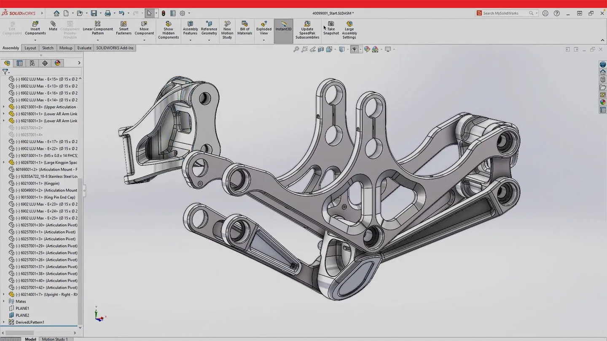

Break the Agent: 2D Structural Design
Built for Junction 2026 to solve AfterQuery’s “Break the Agent” challenge: creating an RL environment that exposes real AI failure modes with exploit-resistant rewards.
Today’s AI agents can write thousands of lines of code in seconds. Ask them to design a real physical part—and they fail basic physics.
In aerospace and automotive engineering, removing excess weight without sacrificing strength is everything. Most AI benchmarks only test text or 2D pixel grids that you could never manufacture. We built a (RL) environment for real 2D structural design: agents carve shapes out of a solid metal plate and get millisecond physics feedback on whether the part will hold up under load, scored against theoretical topological optimization ().
- Real Geometry: Agents cut holes, slots, and rounded pockets—not raw pixel grids—exportable to standard manufacturing files
- Millisecond Physics: Instant structural simulation measuring stiffness, weight, and peak stress
- Harbor + RL Suite: 3 graded multi-load benchmarks with an isolated anti-cheat verifier

The Gap
Left to themselves, frontier models punch greedy holes wherever stress looks low—leaving behind fragile slivers, sharp stress fractures, or severed load paths. Our reference implementation pairs topological optimization () with parametric shape fitting to achieve a near-optimal strength-to-weight ratio, while Do-Nothing (uncut stock) and Stop-Early baselines earn zero credit.
How Designs Are Scored & Compared
- Theoretical Optimum (): Each design's stiffness (compliance under load) is measured against the continuous topological optimization lower bound () for that geometry and load case.
- Weight & Stress Budgets: Passing designs must meet the target material volume (
<= 35%–40%of the solid plate) and peak stress limit without fragile slivers or disconnected parts. - Reference vs. Baselines: Frontier agents are compared directly against our Reference Implementation (parametric cutouts fitted to the optimum) and the Do-Nothing Baseline (uncut stock, scoring
0.0000).
Why Coding Agents Break on Physical Design
- No Spatial Lookahead: Early cutouts without truss planning create weak hinges or disconnected islands.
- Coupled Physics: Every cut simultaneously shifts volume, stiffness (compliance), and peak Von Mises stress.
- Multi-Load Tradeoffs: Optimizing for a single load case fails when a second independent load case is applied.
Interactive Visual Explorer
Compare Topological Optimization, Reference Implementation, and Harbor Agent runs across all 4 tasks. Blue lines mark the immovable base/supports; red arrows show the applied forces.
Cutout History Replay
Meaningful Difficulty
Every failure mode comes from genuine engineering decisions—not hidden rules or broken tools. Agents have full access to cad-sim / cad_env with <15ms FEA feedback, stress/strain telemetry, volume fraction, and wall-thickness checks at every step.
| Task | Grid | Target Vol | Core Engineering Challenge |
|---|---|---|---|
l-bracket-stress | 50x50 | <= 0.36 | Relieving sharp (20, 20) re-entrant corner stress (von Mises <= 1.85) |
suspension-rocker-multiload | 80x40 | <= 0.40 | Balancing 3 mounting bosses across 2 independent load cases (bump + braking) |
aerospace-rib-obstacles | 80x40 | <= 0.35 | Routing load paths around 2 void tunnels to 3 lugs across 3 load cases (von Mises <= 2.05) |
Observed Agent Failure Modes
- Fragile Slivers & Severed Paths (
0.0000): Greedy oversized cutouts break structural connectivity between supports and loads. - Sharp Stress Fractures: Cutting near the L-bracket re-entrant corner spikes Von Mises stress above
1.85. - Single-Load Overfitting: On
suspension-rocker-multiload, agents thin out struts needed for the secondary braking load case.
Agent Sandbox Capabilities (cad-sim / cad_env)
- Inspection:
info(problem bounds, keepouts, constraints) andstatus(<15msQ4 FEA compliance, peak Von Mises stress, volume, connectivity, wall thickness). - Parametric Cutouts:
cut-circle,cut-rect,cut-slot, andcut-polygon(supporting optional fillets and mirror symmetry). - Iteration & Export:
undo,resetto uncut stock, andexportto SVG / AutoCAD R12 DXF.
Reward Integrity
Built for Harbor v1.4 and RL training, verification runs in isolated mode (environment_mode = "separate") so agents cannot inspect the topological optimization objective (), the reference implementation, or the verifier inside the sandbox.
Strict Manufacturing Guardrails
- Disconnected Load Paths: Floating or severed material earns
0.0—agents cannot delete the part or isolate load bosses. - Unmachinable Slivers: Minimum wall-thickness checks penalize razor-thin webs and degenerate micro-slivers.
- Keep-Out Zones & Feature Limits: Mounting bosses and load/support regions are strictly protected, and cutout counts are bounded.
- Stress & Volume Gates: Exceeding
target_volumeormax_stresscaps reward; doing nothing (vol = 1.0) or stopping early earns0.0.
Teaching AI to think in forces, geometry, and steel means completing the structural task well is the only way to score.
Conclusion
Frontier models can handle single-constraint lightweighting (0.9494 on the L-bracket), but a clear gap opens under multi-load physics and geometric obstacles (0.7771 on the suspension rocker; 0.7582 on the aerospace rib).
Instant <15ms physics feedback paired with strict manufacturing guardrails turns spatial engineering into a dense, exploit-resistant RL signal—giving agents a concrete path to close that gap.